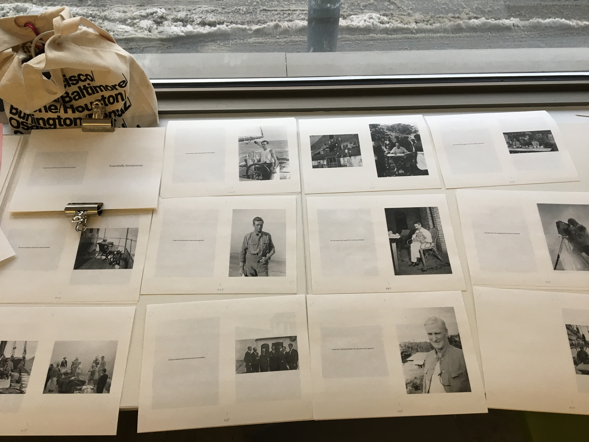
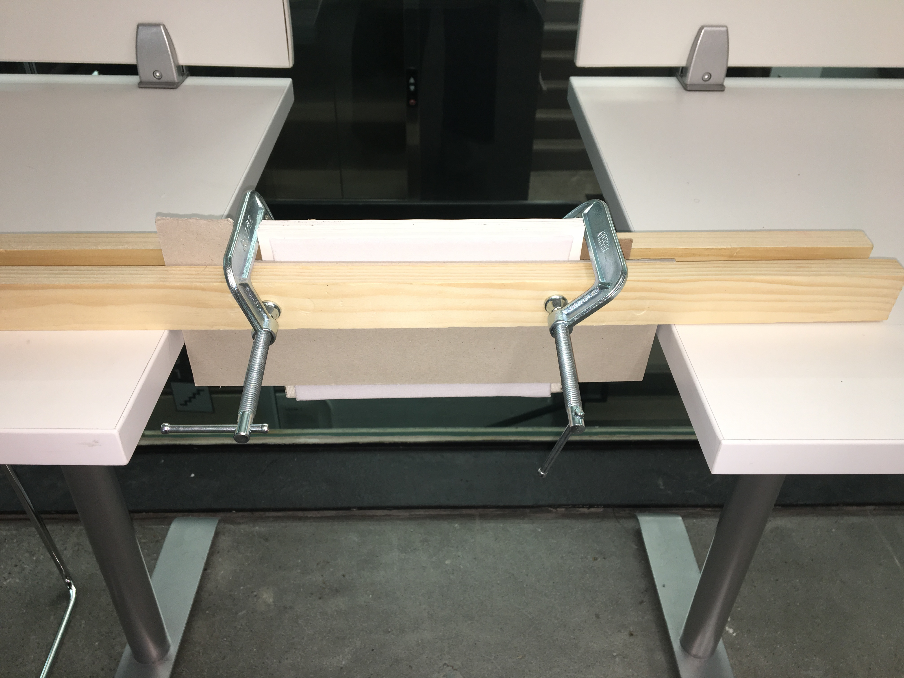
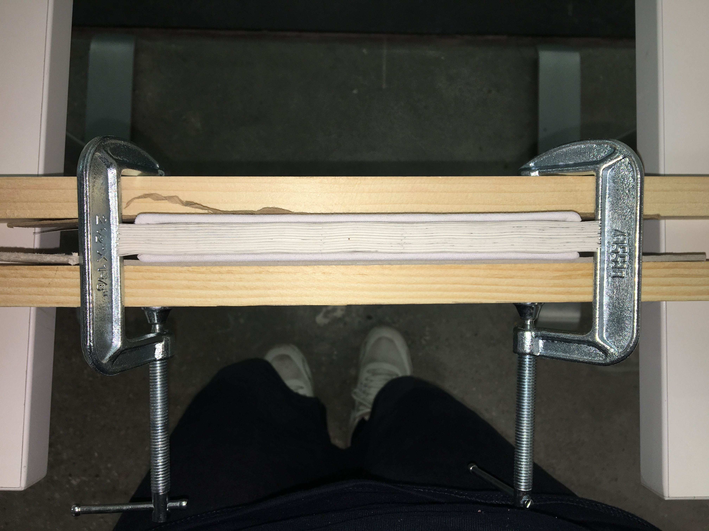
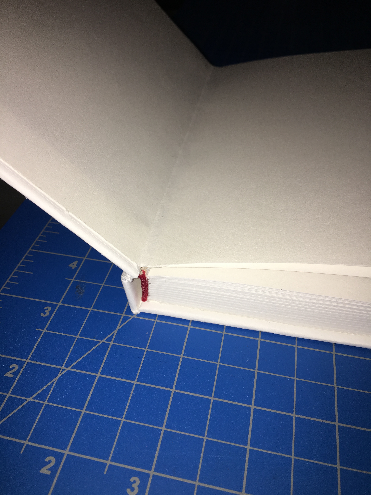
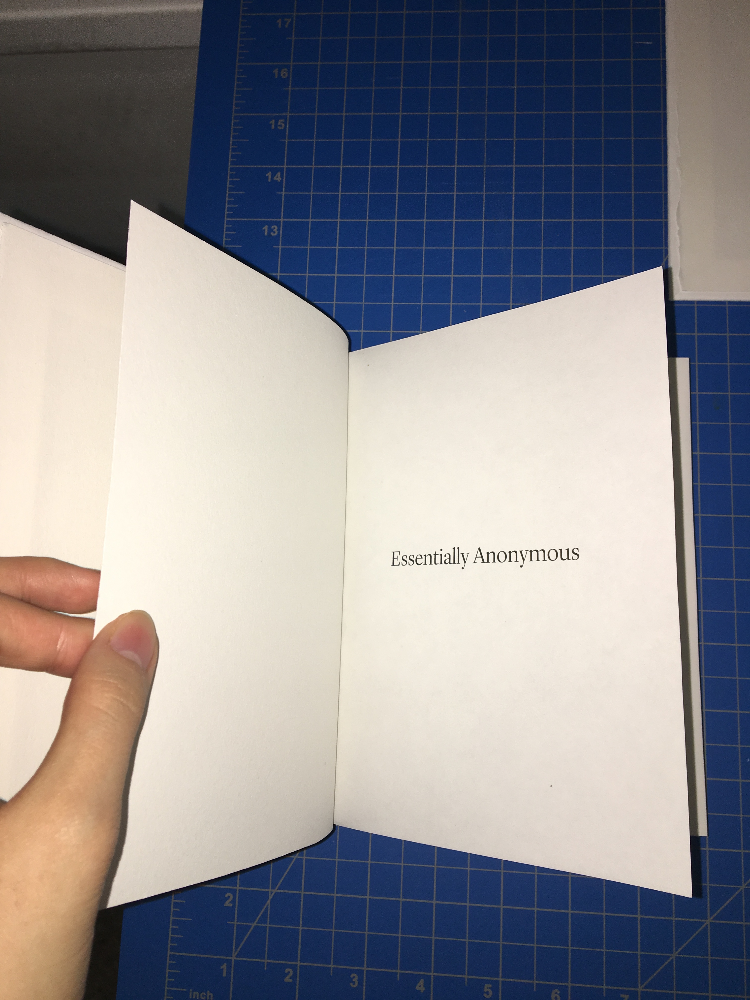
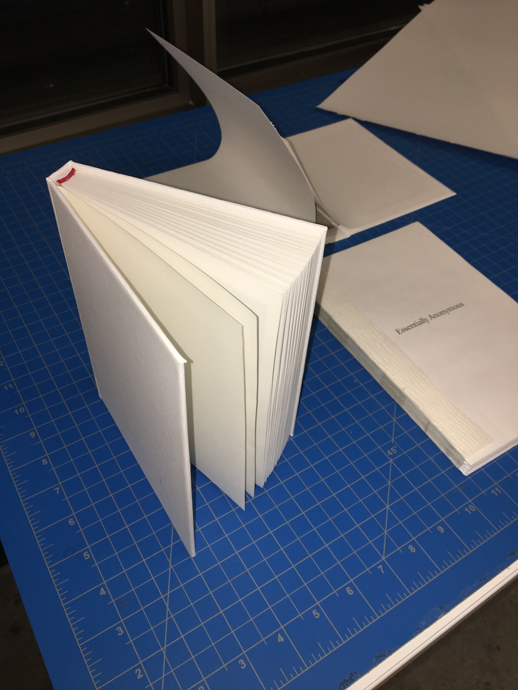
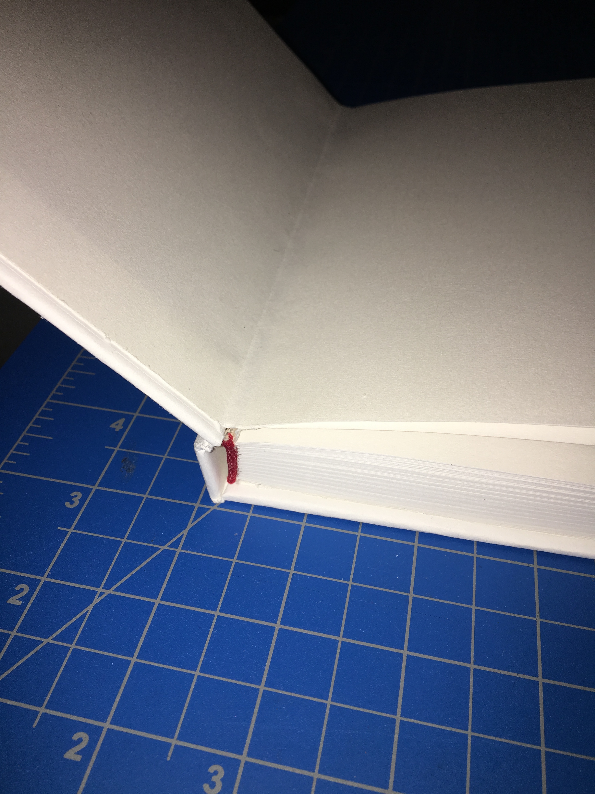
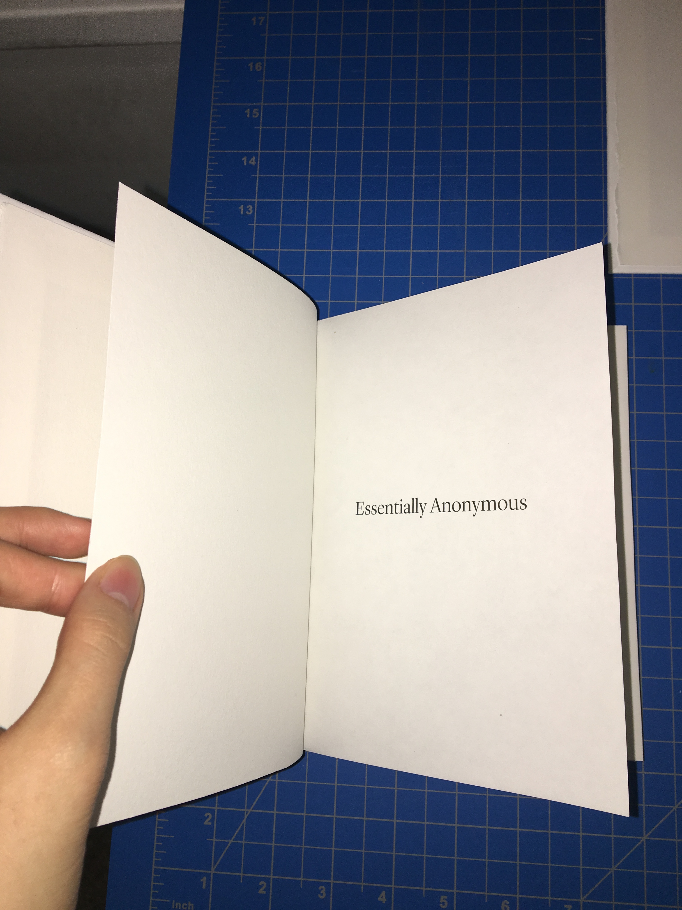
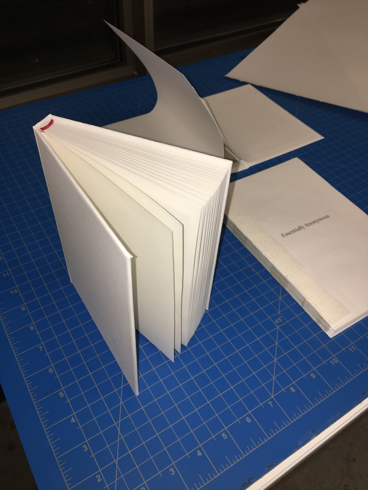

Essentially Anonymous, craft and process
Digital images.
ESSENTIALLY ANONYMOUS IS A two-part installation comprised of two books, one that can touched and flipped through and another that is out-of-reach and unknowable. Both books are comprised of expedition photographs collected from the American Museum of Natural History’s digital archives; the untouchable book in the corner is filled with nameless photographs of people taken by researchers during these expeditions while the in-reach book puts the faces of said researchers on display for viewers to examine. These images are interspersed with a poem addressing the conflicts within the act of speaking for others and documenting experiences outside of your own.¹
Below are a series of images showing my book binding process:
   





1. The Archive, Section 03, Folder A.
ITEM CODE: 03.A.13.D